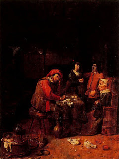

Bava Batra 166 - Contradictory Amounts in Loan Documents
If a loan document restates the amount in different units, and these don't agree, such as "so-and-so borrowed 100 zuz, which is 20 sela" - whereas in truth 20 sela constitutes only 80 zuz - the lender can collect only the lesser of the two amounts, 20 sela in our example, following the rule that " to extract money from his fellow, the burden of proof lies with the claimant ."
If the amount becomes erased, such as "... selas," the minimum of 2 is assumed.
The amount of the loan is mentioned in the upper portion of the document and then again at the end of the document, as in "I have accepted upon myself and upon my heirs a lien for the aforementioned sum of X zuzim," - so that if a letter is missing from the statement in the lower portion, it can be learned from the upper one.
Art: Joos van Craesbeeck - The Wedding Contract